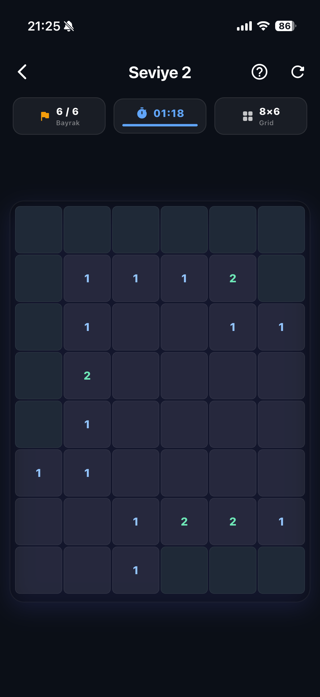
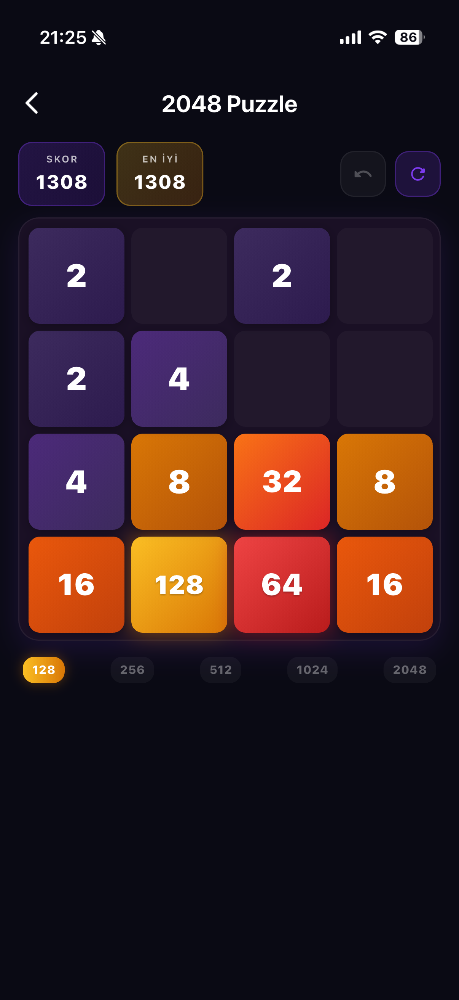
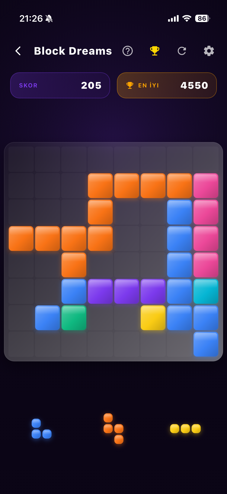
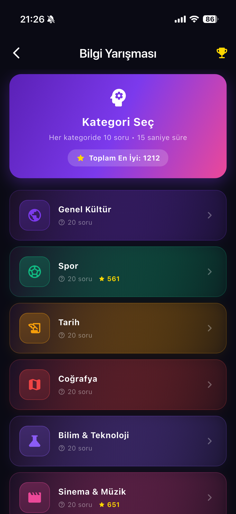

Daha sakin geceler için
Bebeğinizin uykusu için huzurlu bir gece.
Sleepora; rahatlatıcı uyku sesleri, ses karıştırıcı, favoriler, zamanlayıcı, uyku istatistikleri, kayıt ve mini oyunları modern bir deneyimde bir araya getirir.
Öne çıkanlar
Gece akışında gerçekten kullanılan parçalar.
Karıştırıcı, favoriler, zamanlayıcı, uyku istatistikleri ve kayıt — her biri kullanım kolaylığı için yeniden düşünüldü.
Birden fazla sesi katmanla, her biri için farklı seviye seç.
Yağmur + ninni + kalp atışı… Tek dokunuşla bebeğine en uygun karışımı kur ve favorilere kaydet.
Yumuşak kapanış.
15, 30, 45 dakika ya da daha uzun. Ses kademeli olarak azalır.
Sevdiğin karışımı tek dokunuşla başlat.
İstatistikler
Haftalık uyku özeti.
Cum · 01.05
2 oturum
8 sa 57 dk
21:51 · 1 sa 10 dk
23:29 · 7 sa 47 dk
14
oturum
12 sa 5…
Toplam Süre
55 dk
Ortalama
~21:00
Genelde Saat
Favori Ses
Eee Eee
10 sa 34 dk
Saatlik Dağılım
0006121823
Kendi sesini ya da ninnini ekle.
Anne ya da babanın sesi her zaman en güçlü ninnidir. Sleepora kayıt özelliğiyle bunu rutine taşıyabilirsin.
Akıllı geçişler.
Sleepora, gece boyunca çalan sesleri yumuşak geçişlerle birleştirir; uyandırıcı ani kesintiler olmaz.
Deneyim
Tek uygulama, dört adımda huzurlu bir gece.
Interaktif demo
Aşağıdaki sesleri karıştır, kendi karışımını dene.
Sleepora’nın karıştırıcısı tam olarak böyle çalışır — birden fazla sesi açıp kendi gece atmosferini yarat.
3
aktif ses
Oyunlar
Ses deneyimine eşlik eden sade bir oyun alanı.
Bebek uyurken size de küçük bir mola: dört mini oyun, sade ve rahatlatıcı bir tasarımla.




Aileler ne diyor
Daha sakin geceler, daha huzurlu sabahlar.
★★★★★
"Yağmur + ninni karışımıyla bebeğim 10 dakikada uyuyor. Zamanlayıcı sayesinde gece de rahat ediyoruz."
EA
Elif Aydın2 yaşında bir bebek annesi
★★★★★
"Kayıt özelliği çok özel. Eşimin sesini koyuyorum, kızımı sakinleştirmek için harika bir yöntem oldu."
MK
Murat KayaYeni baba
★★★★★
"İstatistikler bölümü çok faydalı. Hangi seste ne kadar uyuduğunu görmek rutinimizi düzenlememe yardımcı oluyor."
ZD
Zeynep Demir3 aylık bebek annesi
Sık sorulan
Aklındaki birkaç soruyu cevaplayalım.
Sleepora’yı App Store ve Google Play üzerinden indirebilirsin. Temel özellikler kullanıma açık, premium içerikler için uygulama içi seçenekler sunuluyor.
Evet. Sleepora arka planda çalışır; telefonunu kilitlesen de zamanlayıcı bitene kadar ses kesilmez.
Tüm sesleri aynı anda katmanlayabilirsin. Her biri için ayrı seviye ayarlayarak kendi rahatlatıcı karışımını oluşturabilirsin.
Uygulama içinde kendi sesini, ninnini veya bebeğin sevdiği bir melodiyi kaydedebilir, bu kaydı diğer seslerle karıştırabilirsin.
Sleepora 5 dilde kullanılabilir: Türkçe, İngilizce, Almanca, İspanyolca ve Fransızca.
Gizlilik
Politikayı aç →
Verilerin güvende, gizliliğin önemli.
App Store süreci ve kullanıcı güveni için gerekli gizlilik politikası, tanıtım deneyiminden kopmadan aynı domain altında erişilebilir.
İndir
Bu gece daha sakin bir uyku ile başla.
Sleepora’yı App Store ya da Google Play üzerinden indir, kendi karışımını kur ve daha huzurlu bir gece rutinine geç.